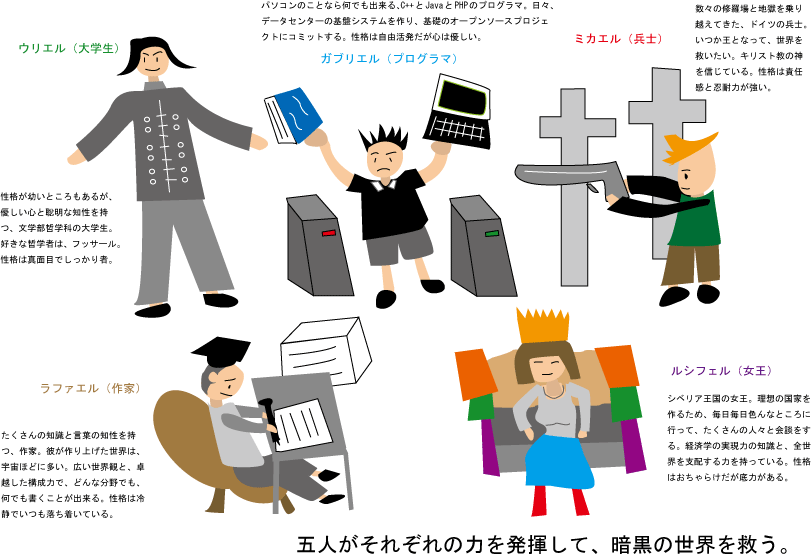

僕がIllustratorを使って描いた、最初の絵です。すぐに作ったせいで、下手すぎてすみません。
テキスト：
ウリエル（大学生） - 性格が幼いところもあるが、優しい心と聡明な知性を持つ、文学部哲学科の大学生。好きな哲学者は、フッサール。性格は真面目でしっかり者。
ガブリエル（プログラマ） - パソコンのことなら何でも出来る、C++とJavaとPHPのプログラマ。日々、データセンターの基盤システムを作り、基礎のオープンソースプロジェクトにコミットする。性格は自由活発だが心は優しい。
ミカエル（兵士） - 数々の修羅場と地獄を乗り越えてきた、ドイツの兵士。いつか王となって、世界を救いたい。キリスト教の神を信じている。性格は責任感と忍耐力が強い。
ラファエル（作家） - たくさんの知識と言葉の知性を持つ、作家。彼が作り上げた世界は、宇宙ほどに多い。広い世界観と、卓越した構成力で、どんな分野でも、何でも書くことが出来る。性格は冷静でいつも落ち着いている。
ルシフェル（女王） - シベリア王国の女王。理想の国家を作るため、毎日毎日色んなところに行って、たくさんの人々と会談をする。経済学の実現力の知識と、全世界を支配する力を持っている。性格はおちゃらけだが底力がある。
五人がそれぞれの力を発揮して、暗黒の世界を救う。